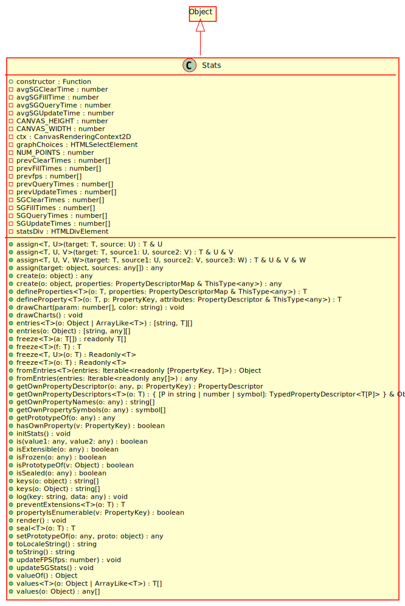

Hierarchy-Diagram
{kind=link}
Legend
 class
class
Hierarchy
- Object
- Stats
Index
Constructors
Properties
Methods
- has
Own Property - is
Prototype Of - property
Is Enumerable - to
Locale String - to
String - value
Of - assign
- create
- define
Properties - define
Property - draw
Chart - draw
Charts - entries
- freeze
- from
Entries - get
Own Property Descriptor - get
Own Property Descriptors - get
Own Property Names - get
Own Property Symbols - get
Prototype Of - init
Stats - is
- is
Extensible - is
Frozen - is
Sealed - keys
- log
- prevent
Extensions - render
- seal
- set
Prototype Of - updateFPS
- updateSGStats
- values
Constructors
constructor
Parameters
Optional value: any
Returns Stats
Properties
constructor
Static Private CANVAS_
Static Private CANVAS_
Static Private Readonly NUM_
Static Private SGClear
Static Private SGFill
Static Private SGQuery
Static Private SGUpdate
Static Private avgSGClear
Static Private avgSGFill
Static Private avgSGQuery
Static Private avgSGUpdate
Static Private ctx
Static Private graph
Static Private prev
Static Private prev
Static Private prev
Static Private prev
Static Private prevfps
Static Private stats
Methods
has
Determines whether an object has a property with the specified name.
Parameters
v: PropertyKey
A property name.
Returns boolean
is
Determines whether an object exists in another object's prototype chain.
Parameters
v: Object
Another object whose prototype chain is to be checked.
Returns boolean
property
Determines whether a specified property is enumerable.
Parameters
v: PropertyKey
A property name.
Returns boolean
to
Returns a date converted to a string using the current locale.
Returns string
to
Returns a string representation of an object.
Returns string
value
Returns the primitive value of the specified object.
Returns Object
Static assign
Copy the values of all of the enumerable own properties from one or more source objects to a target object. Returns the target object.
Type Parameters
T extends {}
U
Parameters
target: T
The target object to copy to.
source: U
The source object from which to copy properties.
Returns T & U
Copy the values of all of the enumerable own properties from one or more source objects to a target object. Returns the target object.
Type Parameters
T extends {}
U
V
Parameters
target: T
The target object to copy to.
source1: U
The first source object from which to copy properties.
source2: V
The second source object from which to copy properties.
Returns T & U & V
Copy the values of all of the enumerable own properties from one or more source objects to a target object. Returns the target object.
Type Parameters
T extends {}
U
V
W
Parameters
target: T
The target object to copy to.
source1: U
The first source object from which to copy properties.
source2: V
The second source object from which to copy properties.
source3: W
The third source object from which to copy properties.
Returns T & U & V & W
Copy the values of all of the enumerable own properties from one or more source objects to a target object. Returns the target object.
Parameters
target: object
The target object to copy to.
Rest ...sources: any[]
One or more source objects from which to copy properties
Returns any
Static create
Creates an object that has the specified prototype or that has null prototype.
Parameters
o: object
Object to use as a prototype. May be null.
Returns any
Creates an object that has the specified prototype, and that optionally contains specified properties.
Parameters
o: object
Object to use as a prototype. May be null
properties: PropertyDescriptorMap & ThisType<any>
JavaScript object that contains one or more property descriptors.
Returns any
Static define
Adds one or more properties to an object, and/or modifies attributes of existing properties.
Type Parameters
T
Parameters
o: T
Object on which to add or modify the properties. This can be a native JavaScript object or a DOM object.
properties: PropertyDescriptorMap & ThisType<any>
JavaScript object that contains one or more descriptor objects. Each descriptor object describes a data property or an accessor property.
Returns T
Static define
Adds a property to an object, or modifies attributes of an existing property.
Type Parameters
T
Parameters
o: T
Object on which to add or modify the property. This can be a native JavaScript object (that is, a user-defined object or a built in object) or a DOM object.
p: PropertyKey
The property name.
attributes: PropertyDescriptor & ThisType<any>
Descriptor for the property. It can be for a data property or an accessor property.
Returns T
Static draw
Parameters
param: number[]
color: string
Returns void
Static draw
Returns void
Static entries
Returns an array of key/values of the enumerable properties of an object
Type Parameters
T
Parameters
o: {} | ArrayLike<T>
Object that contains the properties and methods. This can be an object that you created or an existing Document Object Model (DOM) object.
Returns [string, T][]
Returns an array of key/values of the enumerable properties of an object
Parameters
o: {}
Object that contains the properties and methods. This can be an object that you created or an existing Document Object Model (DOM) object.
Returns [string, any][]
Static freeze
Prevents the modification of existing property attributes and values, and prevents the addition of new properties.
Type Parameters
T
Parameters
a: T[]
Object on which to lock the attributes.
Returns readonly T[]
Prevents the modification of existing property attributes and values, and prevents the addition of new properties.
Type Parameters
T extends Function
Parameters
f: T
Object on which to lock the attributes.
Returns T
Prevents the modification of existing property attributes and values, and prevents the addition of new properties.
Type Parameters
T extends {}
U extends string | number | bigint | boolean | symbol
Parameters
o: T
Object on which to lock the attributes.
Returns Readonly<T>
Prevents the modification of existing property attributes and values, and prevents the addition of new properties.
Type Parameters
T
Parameters
o: T
Object on which to lock the attributes.
Returns Readonly<T>
Static from
Returns an object created by key-value entries for properties and methods
Type Parameters
T = any
Parameters
entries: Iterable<readonly [PropertyKey, T]>
An iterable object that contains key-value entries for properties and methods.
Returns {}
[k: string]: T
Returns an object created by key-value entries for properties and methods
Parameters
entries: Iterable<readonly any[]>
An iterable object that contains key-value entries for properties and methods.
Returns any
Static get
Gets the own property descriptor of the specified object. An own property descriptor is one that is defined directly on the object and is not inherited from the object's prototype.
Parameters
o: any
Object that contains the property.
p: PropertyKey
Name of the property.
Returns PropertyDescriptor
Static get
Returns an object containing all own property descriptors of an object
Type Parameters
T
Parameters
o: T
Object that contains the properties and methods. This can be an object that you created or an existing Document Object Model (DOM) object.
Returns { [ P in string | number | symbol]: TypedPropertyDescriptor<T[P]> } & {}
Static get
Returns the names of the own properties of an object. The own properties of an object are those that are defined directly on that object, and are not inherited from the object's prototype. The properties of an object include both fields (objects) and functions.
Parameters
o: any
Object that contains the own properties.
Returns string[]
Static get
Returns an array of all symbol properties found directly on object o.
Parameters
o: any
Object to retrieve the symbols from.
Returns symbol[]
Static get
Returns the prototype of an object.
Parameters
o: any
The object that references the prototype.
Returns any
Static init
Returns void
Static is
Returns true if the values are the same value, false otherwise.
Parameters
value1: any
The first value.
value2: any
The second value.
Returns boolean
Static is
Returns a value that indicates whether new properties can be added to an object.
Parameters
o: any
Object to test.
Returns boolean
Static is
Returns true if existing property attributes and values cannot be modified in an object, and new properties cannot be added to the object.
Parameters
o: any
Object to test.
Returns boolean
Static is
Returns true if existing property attributes cannot be modified in an object and new properties cannot be added to the object.
Parameters
o: any
Object to test.
Returns boolean
Static keys
Returns the names of the enumerable string properties and methods of an object.
Parameters
o: object
Object that contains the properties and methods. This can be an object that you created or an existing Document Object Model (DOM) object.
Returns string[]
Returns the names of the enumerable string properties and methods of an object.
Parameters
o: {}
Object that contains the properties and methods. This can be an object that you created or an existing Document Object Model (DOM) object.
Returns string[]
Static log
Parameters
key: string
data: any
Returns void
Static prevent
Prevents the addition of new properties to an object.
Type Parameters
T
Parameters
o: T
Object to make non-extensible.
Returns T
Static render
Returns void
Static seal
Prevents the modification of attributes of existing properties, and prevents the addition of new properties.
Type Parameters
T
Parameters
o: T
Object on which to lock the attributes.
Returns T
Static set
Sets the prototype of a specified object o to object proto or null. Returns the object o.
Parameters
o: any
The object to change its prototype.
proto: object
The value of the new prototype or null.
Returns any
Static updateFPS
Parameters
fps: number
Returns void
Static updateSGStats
Returns void
Static values
Returns an array of values of the enumerable properties of an object
Type Parameters
T
Parameters
o: {} | ArrayLike<T>
Object that contains the properties and methods. This can be an object that you created or an existing Document Object Model (DOM) object.
Returns T[]
Returns an array of values of the enumerable properties of an object
Parameters
o: {}
Object that contains the properties and methods. This can be an object that you created or an existing Document Object Model (DOM) object.
Returns any[]
The initial value of Object.prototype.constructor is the standard built-in Object constructor.